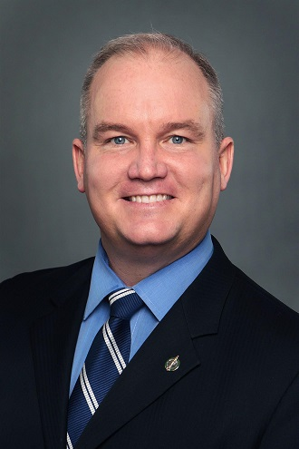
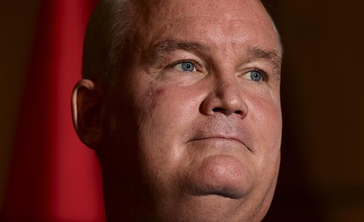
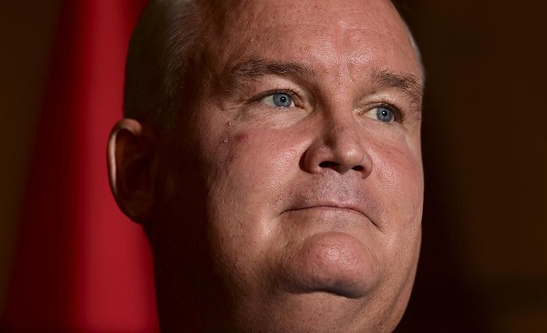
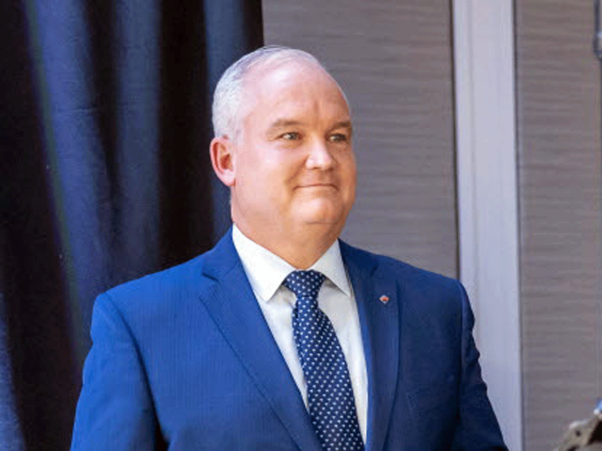
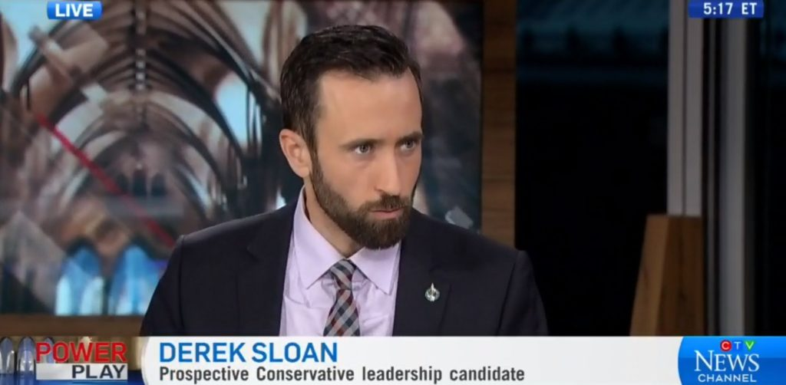
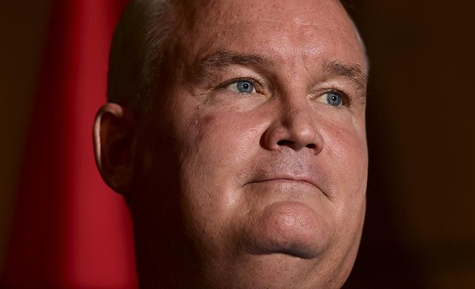

Derek Sloan Outed by "RockRibbed" Erin O'Toole
February 21st, 2021
This story was missed by me, but it happened about a month ago in late January.
CTV:
TDC_ARTICLE_START
OTTAWA -- Controversial MP Derek Sloan was kicked out of the Conservative caucus Wednesday, a move party leader Erin O'Toole said was due to a "pattern of destructive behaviour" that had become a distraction.
TDC_ARTICLE_STOP
Propagandist (((Stephanie Levitz)))
I'm interrupting this story quickly to show you who's writing this. Don't worry, I will make sense of all this for you by the end.
TDC_ARTICLE_START
O'Toole's acknowledgment that Sloan's dismissal was not solely over a donation he'd taken from a white nationalist came after hours of heated debate within caucus that saw MPs castigate both Sloan for his record and O'Toole for how he'd handled the issue.
Sloan said he will now sit as an Independent and will continue to fight for conservatives voices.
TDC_ARTICLE_STOP
Derek Sloan, Booted Candidate
TL:DR, Derek SLoan was a Cuckservative Party Leadership Candidate. He lost in a probably rigged election to Erin O'Toole. Right after that he was squeezed out of the Cuckservative Party for taking a donation from "White Supreeeeeemacist," Paul Fromm. This is all a lot cuckier than you think, so don't get your hopes up.
TDC_ARTICLE_START
"No matter how ugly -- how undemocratic -- the events of the last two days have been, always remember that the Conservative Party of Canada is not the personal property of Erin O'Toole, nor is it the personal property of the cabal that surrounds him," he wrote.
TDC_ARTICLE_STOP
Erin O'Toole, Cuck Leader
Physiognomy really tells the story here. Derek Sloan kind of looks almost like a Chad but not quite. Erin O'Toole looks like a soft cucky weasel who's been put into power by his donors. Those are completely accurate descriptions of both of them. Derek "almost not a cuck" Sloan gets fucked over by Erin "Fuck my Wife Pls" O'Toole inside the Cuckservative Party leadership.
Let's actually compare both of these to handsome Maxime Bernier. He's one of these Boomer Lolbertarian/Conservative types, but in the land of the hormonally-challenged, the one balled man is king.
Punished Maxime Bernier
TDC_ARTICLE_START
O'Toole had formally triggered the effort to boot Sloan after revelations Monday that Sloan accepted a donation last year from a known white nationalist, news that broke one day after O'Toole declared there's no room in his party for far-right extremism or racism.
Sloan claimed he was not aware of the donation previously, and as soon as he learned of it, asked the party to return the money.
But Sloan's extreme socially conservative views had been a thorn in the party's side and there had been mounting pressure on O'Toole to kick him out.
TDC_ARTICLE_STOP
(((Stephanie Levitz)))
Let me translate this from Hebrew to Reality for you goyim. Erin "Yum Yum Donor Cum" O'Toole got the signal to be really anti-White. His donors/handlers found a list of small money donations that Sloan had received. They figured out that one of his donors, Francis Fromm, was actually notoriously chad White Legend Paul Fromm under a psuedonym.
White Legend Paul Fromm
Sloan immediately cucked hard enough to make it to PornHub, because he's not actually a Chad, but O'Toole still used this as an excuse to push Sloan out of the party. Of course, this literally makes zero sense, since it was a $131.00 donation, and Sloan had no way of knowing who it was really Fromm (haha!), but it doesn't need to make sense. This was a clear and obvious power play, which is why O'Toole had to waffle about "muh thorn in side," because even the Cuck Bench was like "dude WTF this shit's retarded."
For the record, Maxime "Boomer Chad" Bernier was accused of having White Nationalist Candidates for the PPC, and he told the media to lick his asshole.
He might not have actually said that, but he refused to denounce them. Again, in the land of Donor-Puppets the retarded Boomer is Lord.
Maxime "Fuck Donors" Bernier
TDC_ARTICLE_START
During his 15 months as an MP, Sloan has faced accusations he's racist, drawn condemnation for his views on LGBTQ rights and for his anti-abortion stance, all leading to periodic calls he be tossed from the party's benches.
TDC_ARTICLE_STOP
Don't get your hopes up, he's not acceptable. This is just (((Levitz))) attacking something moderately anti-pervert or anti-anti-White. Sloan is useless, just go check his twitter.
TDC_ARTICLE_START
"I've worked well with many social conservatives in our party over the years. They are welcome in our party, but Derek Sloan's behaviour is not," wrote former Conservative cabinet minister John Baird on social media this week.
TDC_ARTICLE_STOP
John "I LOVE JEW COCK" Baird
Hol' up, WTF am I looking at? This guy is repulsive. He looks... exactly how I would expect him to look, and a cursory examination shows him to be the biggest Zio-shill I have ever seen. Looks like Johnny is getting his own deep dive soon.
TDC_ARTICLE_START
O'Toole won leadership of the party, however, partially on the strength of Sloan's supporters, and he took pains Wednesday to try to assuage concerns the move was meant as a swipe at them.
"I did not vote to remove Derek Sloan from our caucus because he is a social conservative. We have members of Parliament of deep compassion and unmatched character, who like many Canadians, draw strength from their faith," he said.
"The Conservative party is a big tent that is reflective of all Canadians."
TDC_ARTICLE_STOP
 Oh jesus, make it stop. I can't take these cucks any longer. This fake and gay Christianity mixed with "muh big tent." It's not even the platitudes so much as it is you know these guys are all child fuckers.
TDC_ARTICLE_START
But the most recent knock against Sloan was his effort to mobilize supporters to participate in a Conservative policy convention in March.
The party is investigating whether his use of robocalls to get people to register for the convention runs afoul of telecommunications regulations. His use of the party's membership list to encourage delegates to register also ruffled feathers and is under review and the party has said he's been unco-operative in that process.
While socially conservative groups are traditionally quite active at Conservative conventions, their ranks swelled during the leadership race, given both Sloan's and Leslyn Lewis's campaigns explicitly targeted those constituencies.
With strong enough numbers, resolutions they want to advance have a better chance of passing, including one that would delete a policy pledging that a Conservative government will not regulate abortion.
That in turn would jeopardize O'Toole's efforts to present the party as more centrist.
TDC_ARTICLE_STOP

Oh jesus, make it stop. I can't take these cucks any longer. This fake and gay Christianity mixed with "muh big tent." It's not even the platitudes so much as it is you know these guys are all child fuckers.
TDC_ARTICLE_START
But the most recent knock against Sloan was his effort to mobilize supporters to participate in a Conservative policy convention in March.
The party is investigating whether his use of robocalls to get people to register for the convention runs afoul of telecommunications regulations. His use of the party's membership list to encourage delegates to register also ruffled feathers and is under review and the party has said he's been unco-operative in that process.
While socially conservative groups are traditionally quite active at Conservative conventions, their ranks swelled during the leadership race, given both Sloan's and Leslyn Lewis's campaigns explicitly targeted those constituencies.
With strong enough numbers, resolutions they want to advance have a better chance of passing, including one that would delete a policy pledging that a Conservative government will not regulate abortion.
That in turn would jeopardize O'Toole's efforts to present the party as more centrist.
TDC_ARTICLE_STOP
Erin "Suspected Child Fucker" O'Toole
Once again I translate from Hebrew to Reality. Erin O'Toole is being a good little goy for his probably Hebrew Donors. Erin The Toole has already promised that he's going to be a fiscal cuckservative, social liberal neo-con faggot with complete and utter contempt for the people. Part of that is to not even acknowledge things like racial discrimination against White People in, say, everything, or hollywood being run by LIBURALS WHO ARE JUST THROUGH PURE COHENCIDENCE ALL JEWS! But the other part is that even the cucky whatevers that social conservatives think up, like moderate free speech, or ending funding for planned parenthood, simply do not get a seat at the table.
O'Toole and his owners know damn well that if the little peasants get to go to the Cuckservative Policy Convention, they're going to BTFO his (((Big Money Donors))) every day of the week, so he's resorting to utterly criminal behaviour, pulling out all the stops in order to stop that.

Fuck these people.
TDC_ARTICLE_START
In his email Wednesday, Sloan urged his backers not to give up, a spirit echoed by the Campaign Life Coalition, which accused O'Toole of trying to deflate people's enthusiasm.
"Don't give O'Toole exactly what he wants," the coalition's Jack Fonseca wrote in the email.
"We are so close to winning at the convention that even if Derek gets expelled, we need to stay engaged in the convention to make the party more socially conservative in its policy declaration."
TDC_ARTICLE_STOP

I stand by my claim that Sloan is not a Chad, but I take back that he's useless. Anyone getting fucked over by the utterly repulsive child fuckers at the Servative Party is worthy of some respect. And anyone organizing the people for something not astroturfed is fighting on our side, whether they admit it or not.
Oh jesus, make it stop. I can't take these cucks any longer. This fake and gay Christianity mixed with "muh big tent." It's not even the platitudes so much as it is you know these guys are all child fuckers.
TDC_ARTICLE_START
But the most recent knock against Sloan was his effort to mobilize supporters to participate in a Conservative policy convention in March.
The party is investigating whether his use of robocalls to get people to register for the convention runs afoul of telecommunications regulations. His use of the party's membership list to encourage delegates to register also ruffled feathers and is under review and the party has said he's been unco-operative in that process.
While socially conservative groups are traditionally quite active at Conservative conventions, their ranks swelled during the leadership race, given both Sloan's and Leslyn Lewis's campaigns explicitly targeted those constituencies.
With strong enough numbers, resolutions they want to advance have a better chance of passing, including one that would delete a policy pledging that a Conservative government will not regulate abortion.
That in turn would jeopardize O'Toole's efforts to present the party as more centrist.
TDC_ARTICLE_STOP
